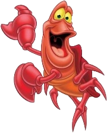

Asimismo, los cangrejos mudan de caparazón cuando aún son jóvenes para poder continuar creciendo. Primero, la cáscara se ablanda y empieza a deteriorarse y separarse poco a poco, mientras comienza a formarse una nueva. Cuando están lo suficientemente preparados, los cangrejos abandonan su caparazón antiguo. Son animales omnívoros que se alimentan de cualquier materia orgánica que encuentran a su paso como otros crustáceos, moluscos, pequeños peces o gusanos. Los cangrejos no suelen cazar su propio alimento, sino que prefieren esperar a que la marea los arrastre y les provea el alimento. Sin embargo, hay casos de especies, como el cangrejo cocotero (Birgus latro), que son exclusivamente herbívoras. Concretamente, este animal de gran tamaño y un caparazón muy robusto, suele trepar a lo alto de los cocoteros para recoger el fruto, cortarlo y comer la pulpa. Los cangrejos habitan a lo largo de todo el planeta. Los hay que son de agua dulce y otros que son de agua salada. Dentro de este último caso, hay algunos que habitan en el fondo del mar y otros que pasan la mayor parte del tiempo en la tierra. A estos últimos se les suele conocer como cangrejos de tierra y pertenecen a la familia Gecarcinidae como, por ejemplo, el cangrejo Halloween (Gecarcinus quadratus).